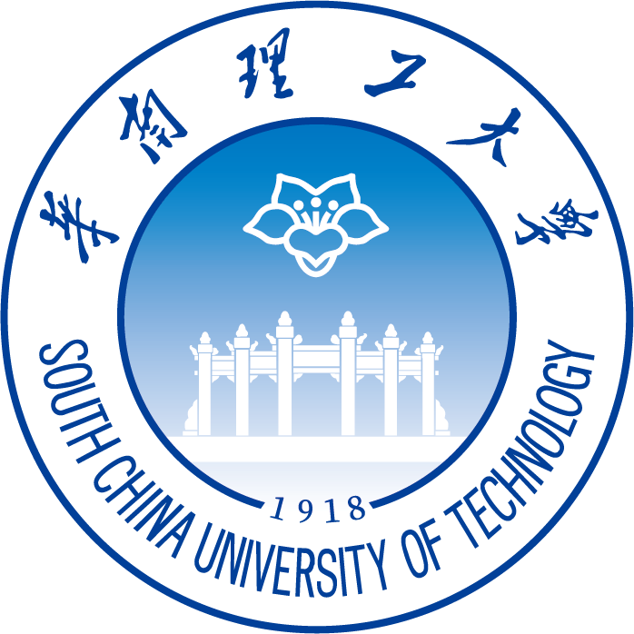

About Me关于我
I am a Ph.D. candidate in Computer Science and Technology at the South China University of Technology, advised by Prof. Yong Xu. I received my B.E. degree from the same university in 2023.
华南理工大学计算机科学与技术博士研究生，导师为许勇教授。本科毕业于华南理工大学计算机科学与技术本博创新班。
My research focuses on AIGC-driven image and video generation, controllable editing, high-fidelity face retouching, virtual try-on, and multimodal generative systems. I am particularly interested in leveraging language and multimodal large models to enable precise and intuitive control over visual generation while preserving identity, fine-grained textures, temporal consistency, and alignment with user intent.
我的研究聚焦于 AIGC 驱动的图像与视频生成、可控编辑、高保真人脸精修、虚拟试衣与多模态生成系统。重点探索如何利用多模态信息结合大模型实现对视觉生成的精准、直观控制，同时兼顾身份保持、细节保真、时序一致性以及与用户意图的准确对齐。
- Current role: TGT Intern at JD Retail, working on AIGC image/video generation systems.当前身份：京东零售 TGT 实习生，从事 AIGC 图像/视频生成系统相关工作。
- Research topics: image generation, image editing, video editing, and multimodal generative models.研究方向：图像生成、图像编辑（精修、去噪）、视频编辑、多模态生成模型。
Internships实习经历
-
JD Retail AIGC Team京东零售 AIGC 团队 Apr 2026 - PresentTGT Internship, AIGC Image and Video GenerationTGT 人才计划实习，AIGC 图像与视频生成方向Contributing to virtual try-on model training, open-source release, technical report writing, layered image editing, streaming try-on video generation, data construction, fine-tuning, inference optimization, and evaluation.参与试穿模型训练、开源发布、技术报告撰写、分层图像编辑、流式试衣视频生成、数据构建、模型微调、推理优化与评测。
News动态
- 2026.04: Joined JD Retail as a TGT intern, working on AIGC image/video generation, virtual try-on, layered image editing, and streaming try-on video generation.加入京东零售 TGT 人才计划，参与 AIGC 图像/视频生成、虚拟试衣、分层图像编辑与流式试衣视频生成。
- 2026: LLM-Inpainter is accepted by IEEE Transactions on Multimedia.LLM-Inpainter 被 IEEE Transactions on Multimedia 接收。
- 2025: RetouchGPT is accepted by AAAI 2025; InpaintFormer is accepted by ICME 2025 as an oral paper.RetouchGPT 被 AAAI 2025 接收；InpaintFormer 被 ICME 2025 接收为口头报告。
- 2024: VRetouchEr is accepted by CVPR 2024; RetouchFormer is accepted by AAAI 2024; SCTrans is accepted by IJCAI 2024 as an oral paper.VRetouchEr 被 CVPR 2024 接收；RetouchFormer 被 AAAI 2024 接收；SCTrans 被 IJCAI 2024 接收为口头报告。
Publications and Projects论文与项目 [Google Scholar]
* Equal contribution. * 表示共同贡献。
Education教育经历
-

South China University of Technology华南理工大学 Sep 2023 - Jun 2027Ph.D. Candidate in Computer Science and Technology计算机科学与技术博士研究生School of Computer Science and Engineering. Advisor: Prof. Yong Xu.计算机科学与工程学院，导师：许勇教授。 -
South China University of Technology华南理工大学 Sep 2019 - Jun 2023B.E. in Computer Science and Technology计算机科学与技术工学学士（本博创新班）
Highlights亮点
- Selected for the JD Retail TGT Talent Program.入选京东零售 TGT 人才计划。
- 2022: University First-class Scholarship during undergraduate study.2022：本科期间获得校级一等奖学金。
- 2021: University First-class Scholarship during undergraduate study.2021：本科期间获得校级一等奖学金。
- 2020: University First-class Scholarship during undergraduate study.2020：本科期间获得校级一等奖学金。
Contact联系
- Email: csxuewen [AT] mail [DOT] scut [DOT] edu [DOT] cn
- GitHub: github.com/Davidcoach
- Google Scholar: Wen Xue
Academic Service学术服务
Conference and Journal Reviewing会议与期刊审稿
- IEEE Transactions on Multimedia (TMM)IEEE Transactions on Multimedia (TMM)
- CVPR
- AAAI
- ECCV
- ICLR